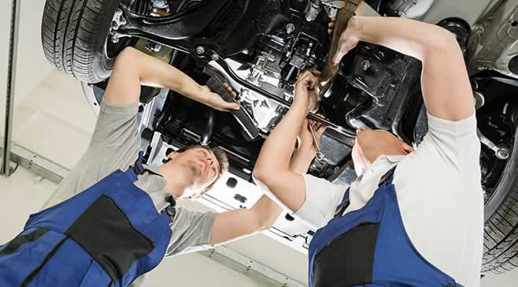
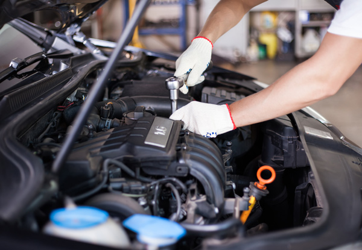

Motor Mouth Mechanics provides clients with professional affordable and highly experienced car and light commercial vehicle servicing and repairs.
Our state-of-the-art facility has been fitted with the very latest diagnostic equipment, designed to speed up the identifying of engine problems and the cause of dashboard lights.
By combining our team’s mechanical expertise with the latest advancements in software and equipment, we can provide clients with modern, streamlined and cost-effective vehicle repair and vehicle servicing.

DIAGNOSTIC TESTING
Using the very latest diagnostic equipment and diagnostic software, our team of highly trained mechanics can access the internal data stored in the car’s onboard computer.
This allows us to quickly identify issues and resolve problems that may be affecting the vehicle's performance.
Our software interprets the outputs of a vehicle’s internal computer allowing us to offer clients a much more in-depth data-driven vehicle repair and vehicle service.
Our diagnostic testing facilities have been installed with the appropriate software for all makes and models of cars and light commercial vehicles.
HYBRID REPAIR AND SERVICING
Hybrid cars have specific and specialist repair and servicing requirements. Our highly qualified team are available for full hybrid vehicle repairs and hybrid vehicle servicing.
Using a combination of software and the expertise of our mechanics, we can maintain the performance of a hybrid vehicle whilst ensuring that the vehicle is, at all times, running at optimum efficiency.

COLLECT AND DELIVERY SERVICE
For clients who are time poor, we provide an extremely convenient collect and delivery service.
A trusted member of our mechanic team can come to your home or work premises and take your car to be repaired or serviced. After the repair or service is completed, we return the vehicle to the client's home or business premises.
This convenient service saves the client time and gives them the peace of mind of knowing that their vehicle is maintained to the highest standard while eliminating the need for them to visit our facility personally
VEHICLE SERVICING
Motor Mouth Mechanics provides owners of cars and light commercial vehicles with modern and professional vehicle servicing. Our service ensures a client's vehicle is running at optimum efficiency.
Using the very latest diagnostic software and equipment, our team can quickly identify potential issues with your vehicle before they negatively impact the engine's performance.
Our in-depth serving makes sure that your car is maintained to the very highest of professional standards.
CAR UNDER WARRANTY SERVICING
Our expert mechanics are available to service vehicles that are under warranty.
We only ever use genuine parts and are able to provide clients with a valid VAT certificate and note the service in the car’s servicing history.
Our car under warranty service is oftentimes offered at a significantly lower cost when compared to a service in a vehicle branded garage